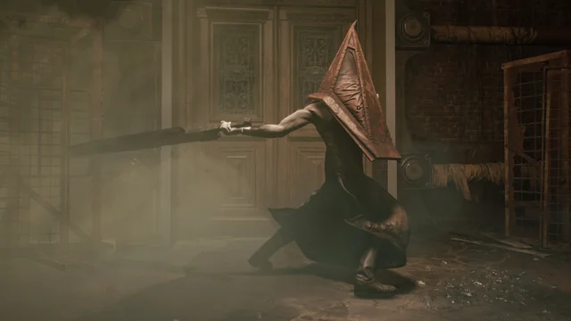
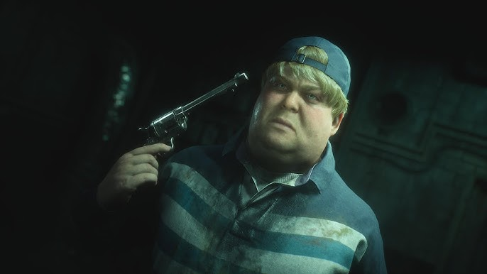

Sobre o Pyramid Head
O Pyramid Head é uma das criaturas mais icônicas do jogo Silent Hill 2. Sua presença é assustadora e misteriosa, aparecendo diversas vezes ao longo da história para confrontar o protagonista James Sunderland. Mais do que apenas um inimigo, ele representa elementos psicológicos profundos ligados à culpa e ao sofrimento do personagem.
Características do Pyramid Head
O Pyramid Head é conhecido por sua aparência perturbadora. Ele utiliza um grande capacete de metal em forma de pirâmide que cobre completamente sua cabeça, além de carregar uma enorme espada ou lâmina que arrasta lentamente pelo chão. Seus movimentos são lentos e pesados, o que aumenta ainda mais a tensão quando ele aparece. Sua presença transmite uma sensação constante de perigo e inevitabilidade.
Curiosidades sobre o Pyramid Head
O design do Pyramid Head foi criado por Masahiro Ito, um dos artistas responsáveis pelos monstros da série Silent Hill. O personagem rapidamente se tornou um dos símbolos mais conhecidos da franquia. Seu visual foi parcialmente inspirado em elementos de horror psicológico e também em figuras de executores históricos, reforçando a ideia de punição presente na narrativa do jogo.
O que torna o Pyramid Head especial?
Diferente de muitos monstros de jogos de terror, Pyramid Head não existe apenas para atacar o jogador. Ele possui um significado simbólico dentro da história, representando a culpa e o desejo de punição que existem na mente de James Sunderland. Isso faz com que ele seja mais do que apenas um inimigo — ele é uma manifestação psicológica do próprio protagonista.

Conclusão
O Pyramid Head se tornou um dos monstros mais marcantes da história dos videogames. Seu design único, sua atmosfera assustadora e seu significado profundo dentro da narrativa fazem dele um dos elementos mais memoráveis de Silent Hill 2 e da franquia Silent Hill como um todo.
Próximo Personagem

Eddie Dombrowski é um dos personagens mais complexos e perturbadores de "Silent Hill 2". Sua história e personalidade são profundamente entrelaçadas com os temas de culpa, violência e desespero que permeiam o jogo, tornando-o uma figura memorável e impactante na narrativa.